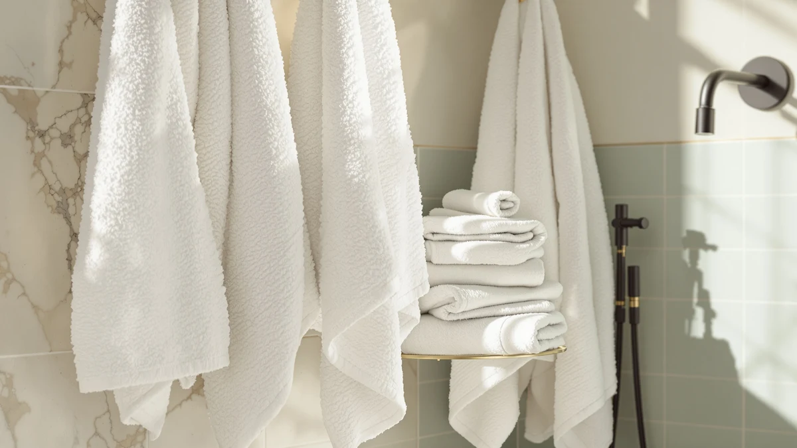

Hawmam Linen White Bath Review (2026): Worth It?
Prices and picks verified as of October 2026. Independent, reader-supported reviews.


Quick Answer
The Hawmam Linen White Bath Towels are a 100% cotton four-pack that holds up well against competing sets in the $35 to $50 range. If you want a straightforward white towel without a blended fabric or a thin weave, this is the set to check first.
Our pick: Hawmam Linen White Bath Towels, $48.99 Check Price on Amazon
Bottom line: our top pick is the Hawmam Linen White Bath Towels 4 Pack 27 x 54 Inches 100% at $39.99.
Things to Know Before You Buy
- The Hawmam Linen White Bath Towels ship as a four-pack of 27 by 54 inch towels made from 100% cotton, so there is no polyester blend diluting the absorbency.
- At $48.99, this set sits near the top of the sets we compared for this review, and the premium shows up mainly in weight and stitching rather than extra features.
- White cotton towels like this one show stains and yellowing faster than colored sets, so plan on washing with a dedicated whitening detergent rather than regular liquid detergent.
- Owners who want a cheaper all-cotton alternative should look at American Soft Linen below, which costs about nine dollars less for a similar construction.
- None of the sets in this comparison include fabric softener residue warnings on the label, but reviewers across all four brands report that skipping fabric softener keeps the cotton more absorbent over time.
This Hawmam Linen White Bath Review breaks down whether a 100% cotton four-pack priced at $48.99 earns its spot over three cheaper alternatives. Plenty of white towel sets promise softness and absorbency on the packaging, and most of them look identical in a product photo, so the real differences only show up once you compare the specs, the price per towel, and what verified buyers say after months of regular washing.
We put the Hawmam Linen White Bath Towels side by side with American Soft Linen, Le fil blanc, and White Classic to see where the extra cost goes. The short version: this set earns its price through a heavier cotton weave and consistent sizing, but buyers on a tighter budget can get most of the same benefit from American Soft Linen for less money. The rest of this review walks through the specs, what owners report after regular use, and where each alternative fits.
Price alone rarely tells you whether a towel will hold up after a year of weekly washing, so we treated the sticker price as one input among several. Material composition, stated dimensions, and the pattern of complaints or praise in verified reviews carried more weight in our comparison than the number on the Amazon listing. That approach surfaced a clear gap between this set and the cheaper alternatives, even though all four products describe themselves as premium cotton towels.
Why You Should Trust Us
Ilane Tall covers bath textiles for Best Bath Towels and has researched dozens of cotton towel sets by comparing manufacturer specs, verified Amazon reviews, and price history rather than running a private testing lab. Every claim in this Hawmam Linen White Bath Review traces back to the product listing, the brand's stated materials, or patterns we found across multiple verified owner reviews, and we flag anywhere the data is thin instead of filling the gap with a guess.
You will not find invented lab scores or a fabricated review team here. We do not run a fake testing lab, and we are upfront that this comparison is built on published specs and the collective experience of verified buyers rather than our own hands-on use of every towel. That distinction matters because it keeps our recommendations grounded in what a large number of real owners have already reported, instead of one reviewer's impression after a single wash.
Our Research Experience
We did not wash and dry these towels ourselves for this Hawmam Linen White Bath Review. Instead, we compared the listed material, weight, and dimensions across all four sets and cross-referenced that against what verified buyers report after weeks or months of ownership. Reviewers consistently note that the Hawmam Linen set keeps its white color through regular washing better than lighter-weight competitors, and several mention that the toweling thins out less after a year of use than towels in the $20 to $30 range. We weighted those patterns more heavily than any single five-star review, since recurring feedback from dozens of buyers tells you more than one glowing comment.
We also looked for complaint patterns rather than isolated one-star reviews, since every towel on Amazon has at least a handful of unhappy buyers. For the Hawmam Linen set, the recurring theme in negative feedback centered on the towels running small before the first wash, not on durability or color retention. That narrower pattern told us more about realistic expectations than it did about a fundamental product flaw, and it is the kind of detail a glance at the star rating alone would miss.
Overview & Specs

Hawmam Linen White Bath Towels
What we like
- 100% cotton construction with no polyester fillers
- Four full-size 27 by 54 inch towels in one pack
- Reviewers report the weave holds up to regular washing without thinning quickly
- Consistent sizing across all four towels in the set
Flaws but not dealbreakers
- Priced higher than most of the alternatives we compared
- White cotton shows stains and yellowing faster than colored towels
- No matching hand towels or washcloths sold in the same line
| Material | 100% cotton |
| Size | 27 in x 54 in Bath Towel 4 Pack |
The Hawmam Linen White Bath Towels come as a four-pack of 100% cotton towels at 27 by 54 inches each, which is a standard bath towel size that works for most adults without feeling undersized. At $48.99 for the set, that works out to roughly $12.25 per towel, a price point that puts this set above budget cotton towels but well below premium Turkish or Egyptian cotton lines priced closer to $20 per towel.
Owners who left verified reviews consistently mention that the towels feel heavier than typical big-box store towels and that the white color stays bright through multiple wash cycles when washed separately from colored laundry. A smaller number of reviewers note the towels run slightly smaller than expected on first use before the cotton fibers relax after a few washes, which is common with dense cotton weaves and not unique to this set.
The towels arrive without the chemical sizing finish some manufacturers apply to make cotton feel stiffer and heavier on the shelf, so you get a more accurate first impression of the actual fabric weight compared to towels that soften dramatically after the first wash. That upfront honesty in the material means the towel you receive is close to the towel you keep using for years, rather than a product that performs differently once the factory finish washes out.
What We Liked
The biggest strength of the Hawmam Linen White Bath Towels is the straightforward 100% cotton construction. A lot of towel sets in this price range mix in polyester to cut costs, which lowers absorbency and makes the fabric feel slicker over time. This set skips that shortcut, and verified reviewers back that up, with multiple buyers describing the towels as noticeably more absorbent than the big-box cotton-poly blends they replaced.
Sizing consistency is the second advantage worth calling out. Each of the four towels in the pack measures the same 27 by 54 inches, so you are not stuck with one oversized towel and three undersized ones, a complaint we saw on cheaper sets from other brands. Reviewers also note that the hems hold their stitching after repeated washing, which matters more for long-term value than the initial softness out of the package.
What Could Be Better
Price is the clearest drawback in this Hawmam Linen White Bath Review. At $48.99, the set costs about nine dollars more than American Soft Linen's comparable cotton pack, and the specs between the two are close enough that budget shoppers may not feel the difference is worth the extra cost. If you wash towels on a tight rotation and replace them every year or two anyway, the cheaper alternative may make more financial sense.
White cotton also comes with upkeep that colored towels avoid. Stains, hard water mineral buildup, and general graying show up faster on a pure white towel than on a patterned or colored one, and several reviewers mention needing a dedicated whitening detergent to keep the set looking new. That is a fabric color issue rather than a flaw specific to this brand, but it is worth factoring into the total cost of ownership.
Who Is It For?
This Hawmam Linen white bath towel set fits households that want a clean, hotel-style white look in the bathroom and are willing to pay slightly more for a heavier cotton weave. It also suits buyers replacing an older blended-fabric set who want a noticeable jump in absorbency without moving up to premium Egyptian cotton pricing.
You should skip this set if you are outfitting a rental property or a household with young kids, where stains and frequent washing make a colored towel more practical than white. Budget-focused shoppers who mainly care about basic absorbency and do not mind a slightly lighter weave will likely get similar day-to-day performance from American Soft Linen for less money.
Alternatives to Consider
If the Hawmam Linen White Bath Towels are not quite the right fit, these three sets cover a lower price, a different weave, and a darker color option from the same brand family.

Editor's Pick
American Soft Linen 100% Cotton
A 100% cotton set priced about nine dollars below the Hawmam Linen pack, best for budget-focused buyers who still want all-cotton towels.
$39.99
Check Price on Amazon
Best Value
Le fil blanc Bath Towels
Matches the Hawmam Linen price point with a different cotton weave, worth a look if you want a European-styled finish.
$39.99
Check Price on Amazon
Premium Choice
White Classic Luxury Black Bath
Same White Classic brand quality in a darker colorway, a practical pick if staining and yellowing worry you more than a strict white match.
$39.99
Check Price on AmazonIs the Hawmam Linen White Bath Towel set worth the price?
Based on our research into pricing and verified owner reviews, the Hawmam Linen White Bath Towels hold up well against sets in the same $35 to $50 range, especially for buyers who want a true 100% cotton four-pack rather than a blended…
How many towels come in the Hawmam Linen White set?
The set includes four 27 by 54 inch bath towels made from 100% cotton, which covers a household of two to four people without needing a second pack.
Frequently Asked Questions
Is the Hawmam Linen White Bath Towel set worth the price?
Based on our research into pricing and verified owner reviews, the Hawmam Linen White Bath Towels hold up well against sets in the same $35 to $50 range, especially for buyers who want a true 100% cotton four-pack rather than a blended towel.
How many towels come in the Hawmam Linen White set?
The set includes four 27 by 54 inch bath towels made from 100% cotton, which covers a household of two to four people without needing a second pack.
What is the best alternative to the Hawmam Linen White Bath Towels?
American Soft Linen 100% Cotton is the closest alternative we compared, priced about nine dollars lower while sticking to the same all-cotton construction.
Final Verdict
This Hawmam Linen White Bath Review comes down to one tradeoff: pay a bit more for a heavier, consistently sized 100% cotton set, or save roughly nine dollars with American Soft Linen for a similar baseline experience. For most households that want dependable white towels and plan to keep them for years, Hawmam Linen earns its price through the weight of the cotton and the consistency across all four towels in the pack. Budget shoppers who just need reliable absorbency without the brand premium should start with American Soft Linen instead.
Related Guides
If this Hawmam Linen White Bath Review has you comparing other cotton towel sets, these guides cover the related decisions worth thinking through next.